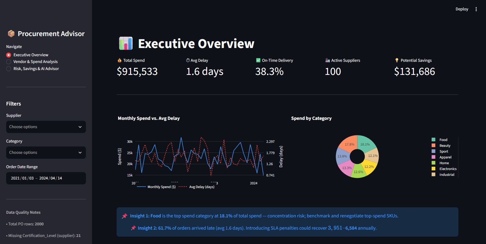
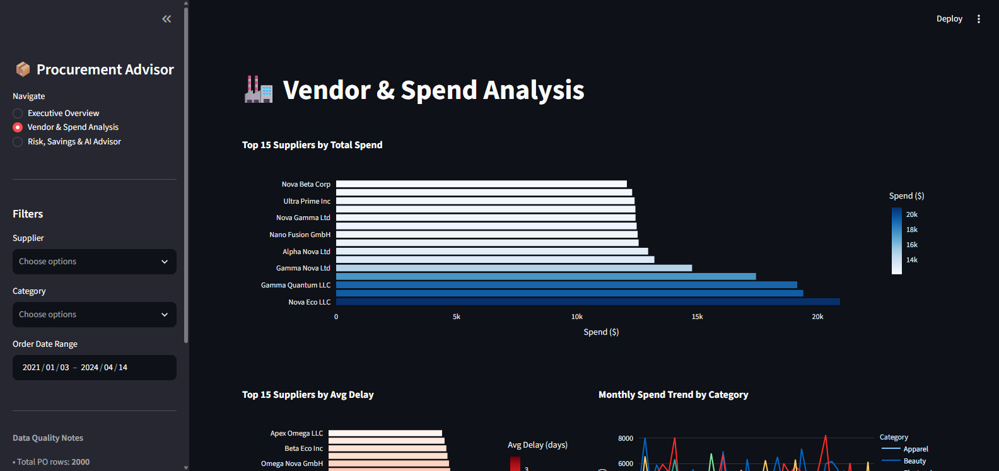
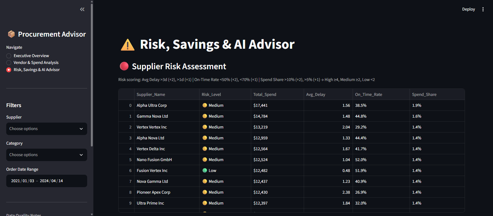

DATA ANALYTICS & AI
AI Procurement Cost-Savings Advisor
A Streamlit dashboard that turns purchase orders into supplier and savings decisions.



Project scope
The app joins 2,000 purchase orders with 100 supplier records and 200 product records. It calculates delivery delay, on-time rate, price variance and supplier spend concentration.
Evidence and limitations
The supplied project report finds 1,234 late orders, an average delay of 1.58 days, and 21 suppliers without a recorded certification level. Renegotiation and consolidation savings are modelled opportunities, not guaranteed financial returns. OpenAI narratives are optional; rule-based summaries work without an API key.